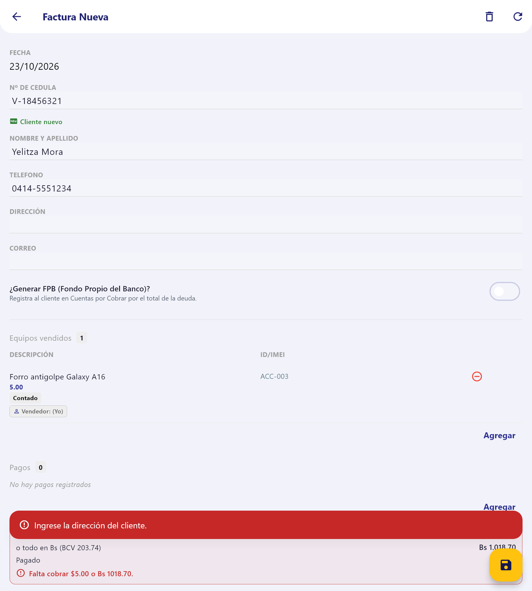
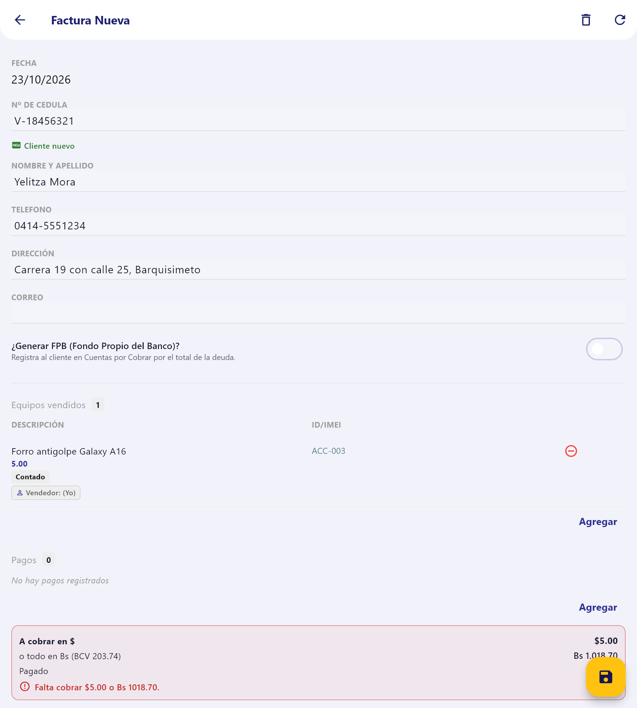
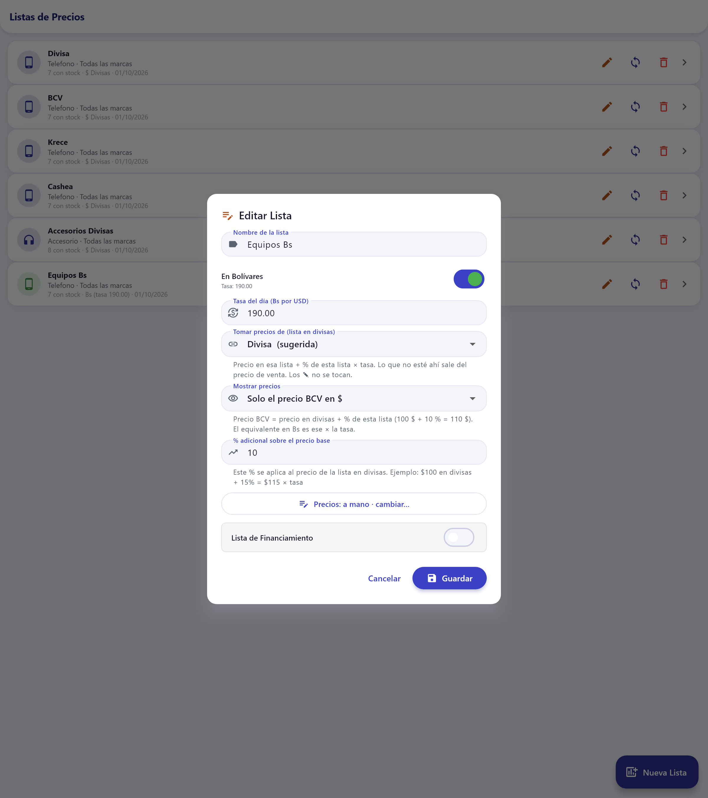
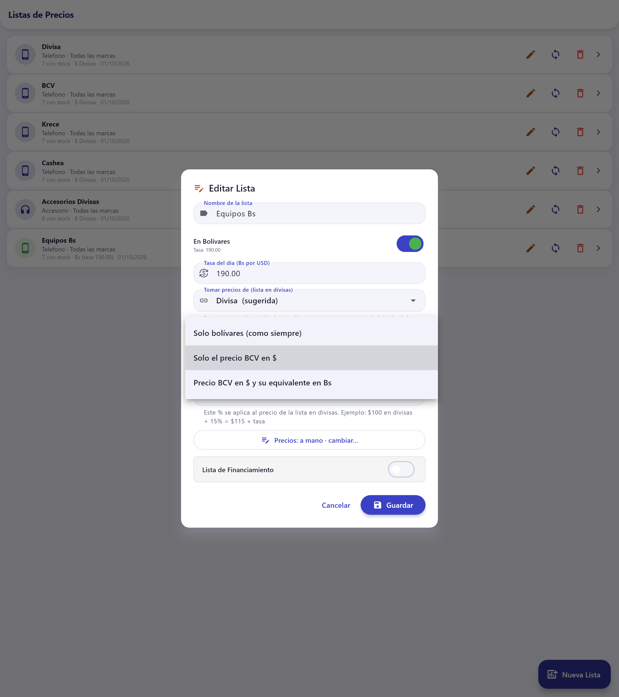
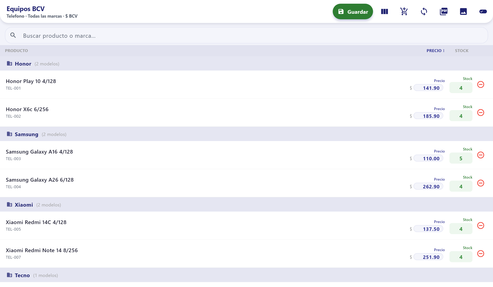
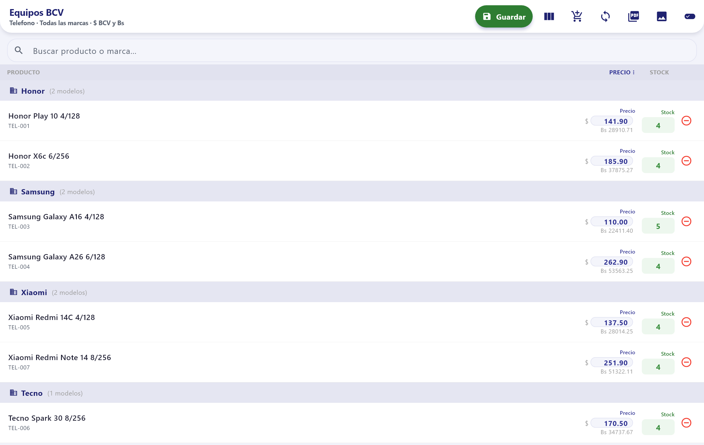

Android y WindowsVan con la 1.0.18 (en revisión)Las listas siguen igual hasta elegir otra vista
1
Dirección del cliente en la factura
La factura nueva pide la dirección del cliente, la imprime y la recuerda para la próxima compra.
2
Listas en bolívares con precio BCV
Cada lista en Bs puede mostrar solo el precio BCV en dólares, o el precio BCV y su equivalente en Bs.
1 Dirección del cliente en la factura
Antes: la factura pedía cédula, nombre, teléfono y correo, pero no la dirección.
Ahora: debajo del teléfono hay un campo «DIRECCIÓN». Una factura nueva no se guarda sin la dirección: si falta, la app avisa «Ingrese la dirección del cliente.».
La dirección sale en la factura impresa: en el ticket y en la factura A4.
Si el cliente ya compró antes, al escribir su cédula la dirección se llena sola.
Las facturas viejas no tienen dirección. Se pueden editar sin que la pida.

Sin dirección no se guarda: la app avisa en rojo.

Con la dirección escrita ya se puede guardar.
2 Listas en bolívares con precio BCV
Antes: una lista en bolívares mostraba solo el precio en Bs.
Ahora: cada lista en Bs elige cómo mostrar sus precios, con la opción nueva «Mostrar precios»:
Opción
Qué muestra
Ejemplo: $100 en divisas + 10 %
Solo bolívares (como siempre)
El precio en Bs
Bs 22.411,40
Solo el precio BCV en $
El precio en divisas + el % de la lista
$110,00
Precio BCV en $ y su equivalente en Bs
El precio BCV y debajo cuánto es en Bs
$110,00 · Bs 22.411,40
Precio BCV = precio en la lista en divisas + % de la lista en Bs
Equivalente en Bs = precio BCV × tasa (en el ejemplo, $110 × 203,74 = Bs 22.411,40)
Nada cambia solo. Las listas en bolívares que ya existen siguen mostrando Bs hasta que la administración les cambie la opción. Los precios guardados no cambian: solo cambia cómo se ven.
2.1 Dónde se elige
Listas de precios → lápiz de la lista en Bs → «Mostrar precios», debajo de «Tomar precios de». Lo mismo está al crear una lista nueva en bolívares.

Lista en Bs que toma los precios de «Divisa» con 10 % y muestra solo el precio BCV.

Las tres opciones. «Solo bolívares» deja la lista como era antes.
2.2 Así se ve la lista

«Solo el precio BCV en $»: el Galaxy A16, que vale $100 en «Divisa», sale a $110,00.

«Precio BCV en $ y su equivalente en Bs»: debajo de cada precio sale cuánto es en bolívares.
2.3 Lo demás que respeta la opción
El PDF y la imagen que se comparten de la lista muestran lo mismo que la pantalla.
La consulta rápida de precios también: el precio BCV y, si se eligió, los Bs debajo.
Con «Solo BCV», un precio escrito a mano se escribe en dólares; la app lo pasa sola a Bs con la tasa.
Al facturar, si la lista llamada «BCV» es una lista en Bs con esta opción, el cobro toma el precio en dólares.
Las pantallas y cifras de este documento son de datos de ejemplo, no de clientes reales.